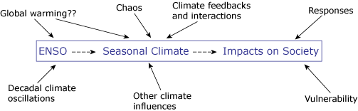

This is a more complex version of the ENSO Impacts System.

ENSO
The effects of ENSO on seasonal climate conditions, and the effects of these
climate conditions on society, are often consistent, but they are modulated
by many other factors.
The frequency and strength of ENSO events, and the relative number
of El Niño and La Niña events, are known to vary on time scales
of decades and longer. There are also suggestions that global warming could
change these characteristics of ENSO, but there is little consensus on what
these changes might be.
ENSO is only one of several influences on seasonal climate, so
the climate is never exactly the same in any two events, even in regions
that are strongly influenced by ENSO. Other influences on seasonal climate
include sea-surface temperatures in other ocean basins (like the Atlantic
or Indian Ocean), sea-ice extent in the polar regions, and snow cover in
high latitudes (like the in Tibetan Plateau). Furthermore, the way ENSO influences
seasonal climate has changes over time. For example, El Niño events
were closely associated with the failure of the Indian monsoon in the late
1800s and early 1900s, but the association disappeared for the rest of the
1900s.
Seasonal climate, and therefore ENSO, is only one of many factors
that affect people and their environment. For example, there are almost always
other factors contributing to the occurrence of famines than failure of rainfall
alone such as government policies, crop and human diseases, lack of credit,
conflict, unfavorable markets, debt, disruption of storage and shipping facilities,
and many others. Another, more recent, factor that modulates the effects
of ENSO events are the preparatory actions people take in response to seasonal
climate forecasts. All these circumstances can change from one ENSO event
to another and so can change the impacts of the event. They also add a higher
degree of complexity to understanding ENSO impacts.